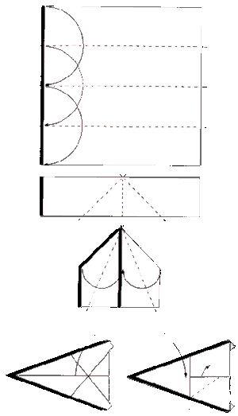
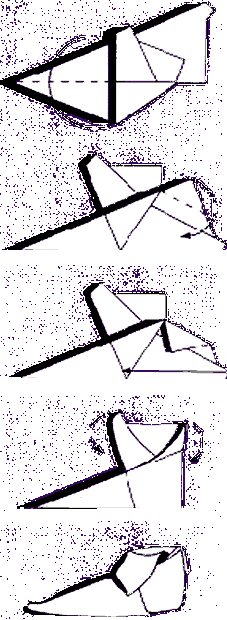

Was het een
beetje teleurstellend wat je in je schoen tot nu toe hebt gevonden?
Welnu, Sinterklaas heeft al zijn Pieten gevraagd om iets extra's te geven als
ze een gevouwen schoen vinden! Hieronder staat hoe je een schoen kan vouwen!
Begin links, dan naar beneden, dan rechts
